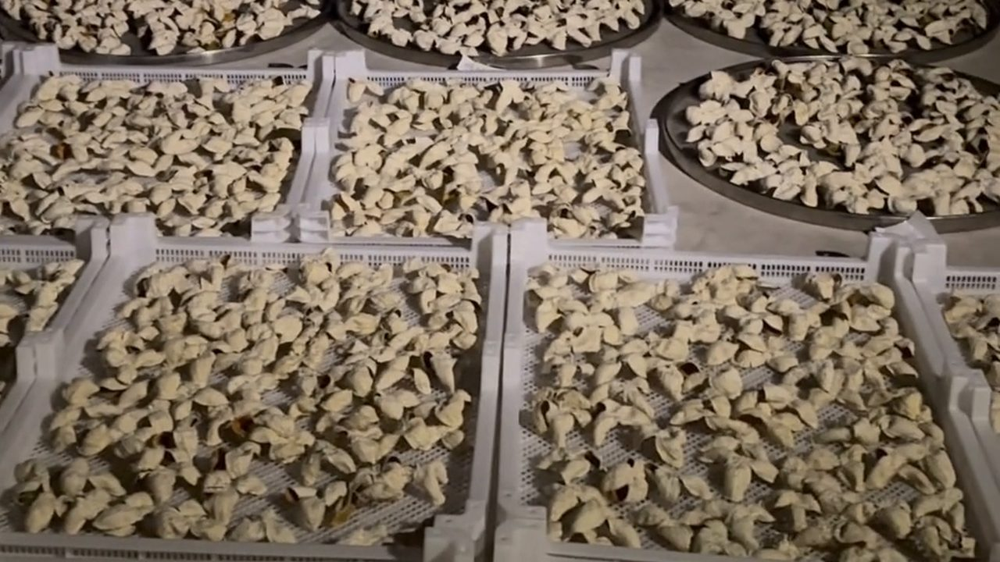
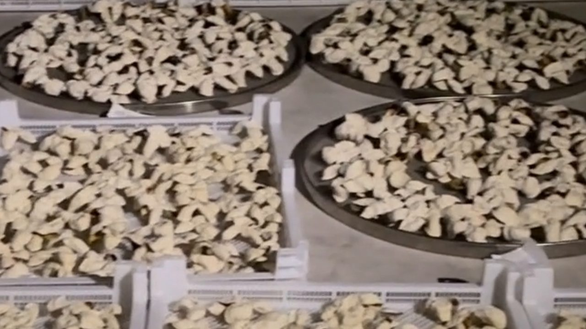
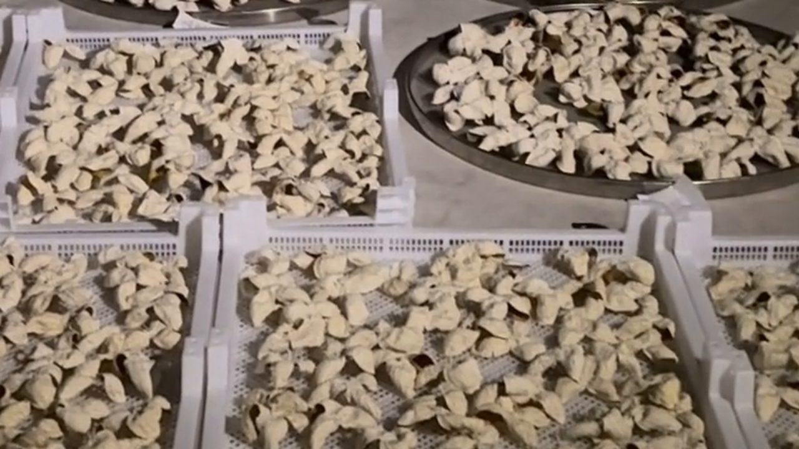
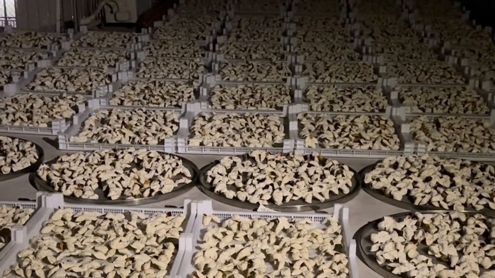
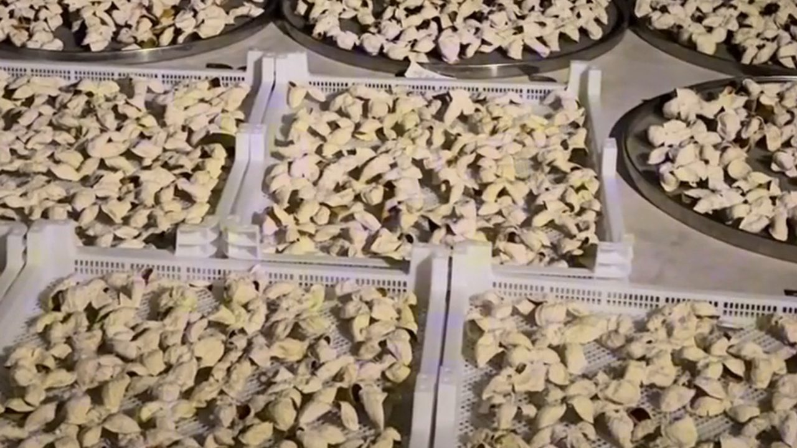

10月5日夜裡，一處屋頂曬場上，整片柑皮還攤在離地的曬架裡，背後是城市的燈火。這個畫面本身就回答了一個常見問題：新會陳皮為什麼要這樣攤着曬。
但它同時也藏着一個更常見的誤會——很多人以為「曬得越多、越久，皮就越好」。事實正好相反：曬得多，不等於曬得好。
一、為什麼一定要離地？

曬皮最忌諱的一件事，是直接鋪在地上。原因有三：
一是地氣。地面晝夜溫差大，夜裡返潮，貼地那一面會先吸濕。
二是通風。離地之後，上下都能過風，乾燥才均勻。
三是潔淨。沙塵、蟲蟻、貓狗走動，都在地面這一層。
所以正規曬場用的是曬架、曬網或圓篩，把皮托起來——就像影片裡那樣，一整片排得整整齊齊。
二、翻曬有節奏：1-3 年與 3-5 年完全不同

依江門市新會陳皮研究院的建議，翻曬不是「有空就曬」，而是按年份分節奏：
1-3 年——保存的關鍵期，柑皮含水量較高。建議每年翻曬至少 2-3 次，每次至少 3 小時，最好安排在早上 9 點至下午 4 點之間。
3-5 年——風味逐漸形成的時期。每年翻曬 1-2 次即可，但要定期檢查，一發現皮身變軟就立即拿出來翻曬。
關鍵的一句在這裡：翻曬時不要過度曝曬一整天，因為陳皮的揮發油本身就是重要成分——曬過了，香氣先跑掉。這也是非遺工序裡「曬制要求光照適度」的意思。
「咁即係曬到乾身就夠，唔係曬到硬晒？」
「係。皮要乾，但唔可以曬到失油。你聞下就會知——過曬嘅皮，香氣係『死』嘅。」
三、曬完之後：等熱散，再裝袋

很多人忽略這一步：剛從太陽底下收回來的皮是帶熱氣的，要等熱量完全散去之後再裝進布袋。熱着收進袋裡，等於把濕氣悶在裡面。
存放的位置也有講究：放在自然通風乾燥的地方，並且離地、離牆、離頂。這「三離」不是玄學，是為了讓四周都有空氣流動。
四、哪些天氣不該曬？

新會人說「睇天食飯」，說的就是這一段。以下幾種情況都不適合攤曬：
下雨或將要下雨——這是最直觀的，也是為什麼要「連夜翻、連夜收」。
濕度高的回南天——空氣本身是濕的，曬了反而回潮。
風大起塵——落塵比陽光更難處理，一旦沾上就洗不掉。
所以真正的曬場，看的不只是有沒有太陽，還要看濕度、風向和接下來幾個小時的天氣。
五、買家的三個提問

如果想知道手上的皮是不是「曬得好」，可以問賣家這三句：
一、在哪裡曬？——曬場、棚架、還是路邊？三者的潔淨度差很遠。
二、多久翻一次？——答得出年份節奏的，通常是真的自己在做。
三、有沒有烘過？——烘乾的皮快，但香氣層次差；生曬慢，成本高。敢正面回答的賣家，比含糊其辭的可信。
常見問題
新會陳皮為什麼一定要離地曬？避免地面返潮（地氣）、讓上下都能通風、並遠離沙塵與蟲蟻。正規做法用曬架、曬網或圓篩把皮托起來。
翻曬要多久一次？1-3 年的皮每年至少 2-3 次、每次至少 3 小時，安排在上午 9 點至下午 4 點；3-5 年每年 1-2 次。皮身變軟要立即翻曬。
為什麼不能曝曬一整天？陳皮的揮發油是重要成分，過度曝曬會讓香氣流失。非遺工序也強調「曬制要求光照適度」。
曬完可以馬上裝袋嗎？不行。要等熱量完全散去再裝進布袋，否則等於把濕氣悶在裡面；存放要通風乾燥，並離地、離牆、離頂。
哪些天氣不能曬皮？下雨或將下雨、濕度高的回南天、風大起塵的日子都不適合。除了看太陽，還要看濕度與風向。
生曬和烘乾有什麼分別？烘乾速度快、成本低，但香氣層次較薄；生曬慢、要看天，香氣較完整。買的時候可以直接問賣家有沒有烘過。
結語
曬皮這件事，看起來只是「把皮攤開」，實際上是一整套看天、看濕度、看年份的判斷。記住一句就夠了：皮要乾，但香氣不能跑。
註：翻曬次數、時間與容器建議引自江門市新會陳皮研究院（江門市五邑中醫院）〈「一兩陳皮一兩金」保存恰當勝黃金〉；工序敘述引自中國非物質文化遺產網「中藥炮製技藝（新會陳皮炮製技藝）」。實際操作請按當地氣候調整。
想知道夜裡為什麼還有人在路邊翻皮，看這篇《夜裡還在翻皮：新會陳皮的「三年曬皮」》；想知道買回來之後怎麼存，翻翻這篇《曬好只是開始：三年陳化在發生什麼》。想親眼看看曬場，來新會陳皮村南門牌坊G04找滢滢姐，好天的時候可以帶你上去看。
下期預告：入箱之後的頭一年最關鍵——滢滢姐會把同一批皮分成紙箱、鐵罐、玻璃瓶三種存法，一年後開箱對比香氣差異。